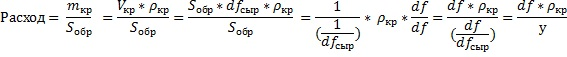
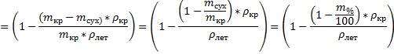
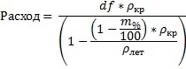

Программа «Расход» предназначена для
расчета теоретического расхода огнезащитный красок.
Теоретический расход для покрытия с
толщиной сухого слоя df
на площади Sобр
может быть определен следующим образом.

где:
mкр – масса краски на
площади S обр ;
Vкр – объем краски
массой m кр;
ρ кр -
плотность краски;
dfсыр
толщина сырого слоя краски массой m
кр
на площади S обр ;
у –значение
усадки, определяемое по формуле


где:
Vсух- объем сухого
слоя краски толщиной df
на площади S обр ;
Vлет – объем летучей
части краски объемом Vкр;
mсух – масса сухого
слоя краски на площади S
обр
;
ρлет – плотность
летучей части краски (плотность растворителя);
m% - массовая доля
нелетучих веществ в процентах.
Формула для расчета теоретического расхода.

Показатели m% ( массовая доля
нелетучих веществ в процентах), ρ
кр
(плотность краски),
и
тип используемого растворителя (вода, сольвент, уайт-спирит и т.д. ),
как правило указываются в технической спецификации на огнезащитный
материал.
" Найдем
где у мухи находятся ушки"
Рассчитанный теоретический расход, как
правило, больше указанного производителем.
Более
низкие значения расхода производителя по сравнению с
рассчитанным вероятно можно объяснить неполной
усадкой при
высыхании и соответственно повышеннием количества пор (воздуха) в
покрытии.
""
Ушки у мухи находятся на лапках"
Процент недоусадки (количество воздуха по объему)
можно
определить с помощью программы перебором значений, до совпадения
рассчитанного расхода и расхода указанного производителем.
Значение недоусадки вводится в процентах.